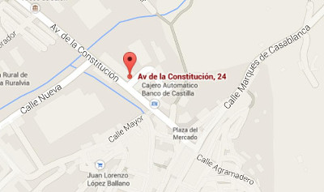

Gran Gourmet Menés
Servicios
Comida
Botellas
Video
Localizanos
Contacto
Gran Gourmet Menés
Dirección:
Av. constitucion Nº24
Arcos de Jalon, Castilla y Leon
Desde Zaragoza (147km) por A2 1h 25 min sin trafico.
Desde Madrid (170km) por A2 1h 40 min sin trafico.
Desde Calatayud (64,3km) por A2 41 min sin trafico.
Desde Medinaceli (21,3km) por A2 25 min sin trafico.
HORARIO TIENDA GOURMET
De lunes a viernes de 9,45 a 13,45 y de 17,00 a 20,00 y los sabados de 9,45 a 13,45.
HORARIO TIENDA GOURMET
De lunes a viernes de 9,45 a 13,45 y de 17,00 a 20,00 y los sabados de 9,45 a 13,45.
